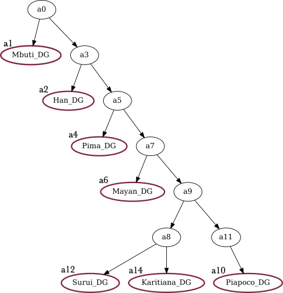
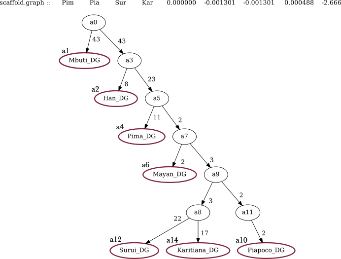
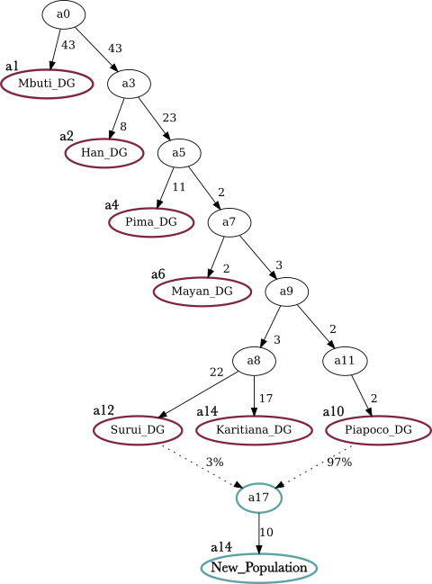

13 Estimating Admixture Graphs with qpGraph
13.1 Method Overview
Qpgraph is used to reconstruct models of genetic relationships between different groups (that can be single individuals or larger populations) through a phylogenetic tree, which allows for admixture from one group into another. The method operates on a user-defined graph topology and estimates f2, f3, and f4-statistic values1 for all pairs, triples, and quadruples of groups in the provided dataset. After, these calculated statistics are compared to the expected – based on the graph topology the user has set - allele frequency correlation of the tested groups.
For a given topology, qpGraph2 (Patterson et al. 2012) provides branch lengths (and mixture proportions in the case of an admixture event) that produce the best fit to allele frequency statistics measured on the data. Groups that share a more recent common ancestor will co-vary more than others in their allele frequencies due to common genetic drift.
Keep in mind: The reconstructed graph is never meant to reflect a comprehensive population history of the region under study but the best fitted model to the limit of the available groups, the user’s input topology and the method’s resolution.
▶️▶️▶️ Instructions on how to install the AdmixTools package and qpGraph can be found here.
13.2 Data Preparation
Include individuals with at least 100,000 SNPs covered.
Genotype data in EIGENSTRAT format as input.
When working with ancient DNA, exclude a subset of SNPs3 that are transitions in CpG sites. Those Cytosines are prone to be methylated and if deamination (the typical chemical modification of aDNA) occurs at the same position Cytosine is directly converted into Thymine without becoming Uracil. Thus, the resulting CtoT modification cannot be removed with an enzymatic reaction like performing uracil-DNA glycosylase (UDG) treatment.
This results in additional noise in aDNA data that can be reduced by excluding those SNPs, especially when analysing ancient samples that have been processed using different laboratory protocols.
▶️ With plink:
plink --bfile packageprefix --exclude snplist --make-bed --out packageprefix.filtered13.2.1 Parfile
To run qpGraph you will need a parameter file with the following format:
DIR: /data/qpGraph
genotypename: DIR/<filename>.geno
snpname: DIR/<filename>.snp
indivname: DIR/<filename>.ind
outpop: NULL
useallsnps: YES
blgsize: 0.05
forcezmode: YES
lsqmode: YES
diag:.0001
bigiter: 15
hires: YES
lambdascale: 1
initmix: 1000
inbreed: NO
fstdmode: YESGoing through the most important parameter options:
outpop: NULL does not use an outgroup population to normalize f-stats by heterozygosity e.g. selecting a group in the graph in which SNPs must be polymorphic.
useallsnps: YES each comparison uses all SNPs overlapping in that specific test, and not between all groups. The default option is NO; with which qpGraph will calculate the SNPs overlapping across all individuals in the provided dataset. This will result in a lower number of SNPs but will increase the comparability between the individual statistical tests.
blgsize: 0.05 block size in Morgans for Jackknife.
lsqmode: YES4 least-squares mode (The default option is NO); sets the off-diagonal elements of the block-jackknife covariance matrix to 0; this provides stability for large graphs.
diag:.00015 use the full matrix form of the objective function to avoid the basis dependence of the least-squares version of the computation.
hires: YES controls output when more decimals are desired.
lambdascale: 1 preserves the standard scaling of the f-statistics without an extra denominator.
initmix: 1000 This may be useful if you are worried the program may not have found the global optimum.
inbreed: NO if you have populations with 1 individual.
fstdmode: YES branch lengths in units of Fst.
▶️▶️▶️ For more parameter options look at the tool’s page on GitHub and on this Workshop
13.2.2 Graph Topology
In addition, you need to provide a file in which the graph topology for the tree is set. For this, prepare a tab-separated file, beginning with setting labels for each population you need included in the tree. Tip ! in the output summary statistics, only the first three letters appear, so make the labels distinguishable!
In the second part of the graph topology file, you will need to provide the edges of the tree in a bifurcation structure.
The model is based on an unrooted tree and while we show graphs with a selected outgroup as the root, the results should not depend on the root position. After, set the edges based on the direction you want to test. The structure to be followed here is to indicate from which node does the edge start from and to which node does it move towards (b_a0_a1), the node1 (a0) and the node2 (a1) - all separated with tabs.
🔍 Example. For this example, we are using populations from the Simons Genome Diversity Project (Mallick et al. 2016)
Preparing the graph file for the following tree:

root a0
label Mbuti.DG a1
label Han.DG a2
label Pima.DG a4
label Mayan.DG a6
label Piapoco.DG a10
label Surui.DG a12
label Karitiana.DG a14
edge b_a0_a1 a0 a1
edge b_a0_a3 a0 a3
edge b_a3_a2 a3 a2
edge b_a3_a5 a3 a5
edge b_a5_a4 a5 a4
edge b_a5_a7 a5 a7
edge b_a7_a6 a7 a6
edge b_a7_a9 a7 a9
edge b_a9_a8 a9 a8
edge b_a9_a11 a9 a11
edge b_a11_a10 a11 a10
edge b_a8_a12 a8 a12
edge b_a8_a14 a8 a1413.2.3 Run
Directly on the command line:
qpGraph -p parfile_qpGraph.sh -g scaffold.graph -o scaffold.graph.ggg -d scaffold.graph.dot > scaffold.graph.outWhere -p add the path to the parameter file, -g add the path for your graph file (the one prepared above), -o refers to the output file (.ggg), -d will be the dot file (to visualise the produced tree) and finally, .out file is the combined output file ❗ Keep the naming consistent for each run ❗
- With run file:
#!/usr/bin/env bash
par=DIR/parfile_qpGraph.sh # path to parfile
gp=DIR/scaffold.graph # graph file
cd DIR/output # path to output folder
qsub -cwd -V -b y -l h_vmem=40G -pe smp 4 qpGraph -p ${par} -g ${gp} -o #par.qp${gp}.ggg -d par.qp${gp}.dot > par.qp${gp}.out- Get the pdf through the
.dotfile:
dot -Tpdf scaffold.graph.dot > scaffold.graph.pdf13.3 Output
Includes:
.out file
with the total number of individuals used for all groups and the total number of SNPs available from at least one individual.
List of SNPs with no data.
Summary of Fst, F2, F3, F4-statistics. In case where multiple tests deviate from 0, you can make use of those statistics to get information on where the tree topology does not work, and which populations attract each other more than indicated by the provided topology. After you can adjust the tree accordingly to achieve a better Z-score.
Z-scores determined from standard errors obtained from jackknife resampling. Since we are looking for a tree that fits our data, a Z score of 0 means a perfect fit. Ideally, we are looking for Z-score between 3 and -3 to accept the graph topology.
Worst f-statistic [the outlier f4-statistics]. The entries show the test groups, the fitted (from the defined graph topology) and the observed f4 values, the difference between them, the standard error obtained from jackknife resampling, and lastly the Z-score for the test.
nodata: rs75089321 outpop: NULL population: 0 Mbuti.DG 4 population: 1 Han.DG 3 population: 2 Pima.DG 2 population: 3 Mayan.DG 2 population: 4 Piapoco.DG 2 population: 5 Surui.DG 2 population: 6 Karitiana.DG 3 before setwt numsnps: 918965 outpop: NULL setwt numsnps: 656994 number of blocks for moving block jackknife: 711 snps: 656994 indivs: 18 number of blocks for block jackknife: 711 lambdascale: 1.000 outliers: Fit Obs Diff Std. error Z worst f-stat: Pim Pia Sur Kar 0.000000 -0.001301 -0.001301 0.000488 -2.666
.ggg file
- Drift lengths (in units of Fst multiplied by 1000) and admixture proportions (as percentages from each group) in the case where an admixture edge has been set.
edge b_a0_a1 a0 a1 0.042317
edge b_a0_a3 a0 a3 0.042317
edge b_a3_a2 a3 a2 0.008442
edge b_a3_a5 a3 a5 0.023047
edge b_a5_a4 a5 a4 0.010935
edge b_a5_a7 a5 a7 0.002088
edge b_a7_a6 a7 a6 0.001838
edge b_a7_a9 a7 a9 0.002316
edge b_a9_a8 a9 a8 0.003027
edge b_a9_a11 a9 a11 0.001235
edge b_a8_a12 a8 a12 0.021636
edge b_a8_a14 a8 a14 0.017294
edge b_a11_a10 a11 a10 0.001235
edge b_a17_a16 a17 a16 0.009809
admix a17 a10 a12 0.971592 0.028408.dot file (in pdf format)
At the top you have the worst Z-score informing you which populations attract more than the tree suggests. If it is positive then in the structure a,b,c,d we have more attraction in a-c and b-d. If it is negative then we have more attraction in b-c and a-d.
Numbers on solid lines are genetic drift with units of FST × 1000; if it is 0 then a tri-furcation is suggested, meaning that the branch can be collapsed to the node before.

Once confirming that the base tree works we can keep adding the groups of interest by adding them as edges and checking the output for the statistics.
13.4 Adding an Admixture Edge
If there are indications of an admixture event (either from other analyses or from population history), the tree can be adjusted. To add an admixture edge, we need to adjust the Graph Topology and the graph file accordingly. For this, we need to set an extra edge (admix) specifying which populations have contributed to the admixture.
root a0
label Mbuti.DG a1
label Han.DG a2
label Pima.DG a4
label Mayan.DG a6
label Piapoco.DG a10
label Surui.DG a12
label Karitiana.DG a14
Label New_population a16
edge b_a0_a1 a0 a1
edge b_a0_a3 a0 a3
edge b_a3_a2 a3 a2
edge b_a3_a5 a3 a5
edge b_a5_a4 a5 a4
edge b_a5_a7 a5 a7
edge b_a7_a6 a7 a6
edge b_a7_a9 a7 a9
edge b_a9_a8 a9 a8
edge b_a9_a11 a9 a11
edge b_a11_a10 a11 a10
edge b_a8_a12 a8 a12
edge b_a8_a14 a8 a14
admix a17 a10 a12
edge b_a17_a16 a17 a16
13.5 Tips
- Start with a small, well-understood graph and then add populations (either unadmixed or admixed) one at a time in their best-fitting positions. This involves trying different branch points for the new population and comparing the results (Lipson and Reich 2017).
- If a population is unadmixed and placed in the wrong position, the fit of the model will be poorer, and the inferred split point will move as far as it can in the correct direction, constrained only by the specified topology. If no placement provides a good fit, then we can infer an admixture event, in which case we test for the best-fitting split points of the two ancestry components.
- Mindful of missing data as all f-statistics are computed on the same set of markers (especially if
useallsnps: NOis set. - Over-fitting can be a problem, especially if we hypothesize many admixing events but only have data for a few populations.
- It is important to not have zero-length edges because it might signify that the modeled edge does not exist. Also, terminal edges for ancient groups, especially if composed by a single individual, are artificially long and should not be considered
- Make different directories for every population you want to add, to have more control over the effect it has on the tree topology.
- Using
QpGraphto explore the phylogenetic topology of populations, whose population history is not known is not ideal and can be time consuming. Users recommend using this tool to test two hypotheses against each other and estimating which one has a better fit to the provided data.
For more information, see chapter 3. Introduction to F3- and F4-Statistics↩︎
AdmixtureGraph, part of Admixtools Package↩︎
Least-squares mode: minimizes the sum of the squares of the differences (the “errors”) between the observed (measured) values and the values predicted by a model.↩︎
By using the full matrix representation of the objective function, one can avoid potential issues of basis dependence that might arise when using the least-squares approach – for fitting, leading to more reliable computations. Adding a small value (0.0001) to the diagonal elements of the matrix ensures numerical stability, especially when the matrix might otherwise have very small or zero values on the diagonal, which can cause issues in computations like matrix inversion.↩︎